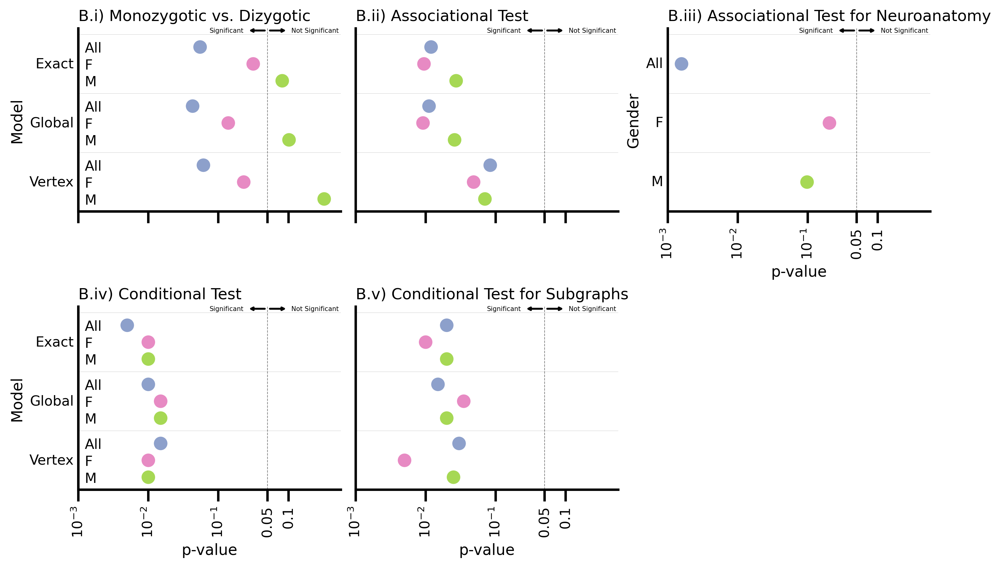

import matplotlib.pyplot as plt
import numpy as np
import pandas as pd
import seaborn as sns
from pkg.plot import Figure, Panel, SmartSVG, Text
parta = pd.read_csv(
"../../twins/notebooks/outs/10-kolmogorov-smirnov/csvs/komogorov-smirnov.csv"
)
parta["test"] = "a"
parta = parta.melt(
id_vars=["Parcellation", "Gender", "test"], var_name="model", value_name="pvalue"
)
partb = pd.read_csv(
"../../twins/notebooks/outs/6-distance-correlations/csvs/distance_correlation.csv"
)
partb["test"] = "b"
partb = partb.melt(
id_vars=["Parcellation", "Gender", "test"], var_name="model", value_name="pvalue"
)
partb.pvalue *= 1000
partb.loc[[12, 51, 90], ["pvalue"]] *= 1000
partc = pd.read_csv(
"../../twins/notebooks/outs/11-covariate-correlations/csvs/covariate_dcorr.csv"
)
partc["test"] = "c"
partc = partc.melt(
id_vars=["Parcellation", "Gender", "test"], var_name="model", value_name="pvalue"
)
partc.pvalue *= 500
partd = pd.read_csv(
"../../twins/notebooks/outs/12-conditional-dcorr/csvs/conditional_dcorr.csv"
)
partd["test"] = "d"
partd = partd.melt(
id_vars=["Parcellation", "Gender", "test"], var_name="model", value_name="pvalue"
)
parte = pd.read_csv("../../twins/notebooks/for_18.csv")
parte["test"] = "e"
parte = parte.melt(
id_vars=["Parcellation", "Gender", "test"], var_name="model", value_name="pvalue"
)
data = pd.concat([parta, partb, partc, partd, parte], ignore_index=False, axis=0)
data = data.loc[data.Parcellation == "Glasser"]
data.to_csv("../data/pvalues.csv", index=False)
sns.set_context("talk", font_scale=0.65)
# options for plots
gap = 0.5
fontdict = dict(fontsize=12)
ytickloc = [1, 2, 3]
titles = [
"B.i) Monozygotic vs. Dizygotic",
"B.ii) Associational Test",
"B.iii) Associational Test for Neuroanatomy",
"B.iv) Conditional Test",
"B.v) Conditional Test for Subgraphs",
]
# setting variables
models = ["Exact", "Global", "Vertex"]
covariate_model = ["Covariate"]
tests = pd.unique(data.test)
genders = ["All", "F", "M"]
nsubplots = len(tests) # tests
nmodels = len(models) # model
ngenders = len(genders) # gender
# create empty fig
width = nsubplots * 2
fig, axes = plt.subplot_mosaic(
"""
ABC
DE.
""",
figsize=(width, 6),
dpi=300,
# sharex=True,
constrained_layout=True,
)
for cdx, ax in enumerate(axes.values()):
test = tests[cdx]
test_data = data.loc[data.test == test]
test_data = test_data.sort_values(["model", "Gender"])
# xs = np.log10(test_data.pvalue)
xs = test_data.pvalue
length = len(xs)
if length == 9:
ys = []
for ytick in ytickloc:
spacing = 1 / (3 + gap)
ys.extend([ytick - spacing, ytick, ytick + spacing])
else:
ys = ytickloc
colors = ["#8da0cb", "#e78ac3", "#a6d854"]
scatter = ax.scatter(
xs,
ys,
c=colors * (length // 3),
)
for idx, (label, ax) in enumerate(axes.items()):
sns.despine(ax=ax)
# xaxis
ax.set_xscale("log")
ax.set_xlim(10**-3, 10**-0.25)
xtick_loc = [0.0001, 0.001, 0.01, 0.05, 0.1]
ax.set_xticks(xtick_loc)
ax.set_xticklabels(
["$10^{-3}$", "$10^{-2}$", "$10^{-1}$", "0.05", "0.1"],
rotation=90,
)
ax.set_xlabel("p-value")
ax.minorticks_off()
if label in ["A", "B"]:
ax.set_xticklabels([])
ax.set_xlabel("")
# yaxis
ax.set_yticks([])
ax.tick_params(axis="y", length=0)
ax.set_ylim(0.4, 3.5)
ax.invert_yaxis()
# set title
ax.set_title(titles[idx], loc="left", fontdict=fontdict)
# lines
ax.axvline(0.05, ls="--", lw=0.5, c="gray") # set alpha-0.05 line
for ytick in ytickloc:
ax.axhline(ytick - 0.5, ls="-", lw=0.25, alpha=0.2, c="k")
# significant labeling
ymin, ymax = ax.get_ylim()
ymax += 0.035
ax.annotate(
"Significant",
xy=(0.05, ymax),
xytext=(0.0075, ymax),
size=5,
arrowprops=dict(
facecolor="black",
arrowstyle="<-",
),
horizontalalignment="left",
verticalalignment="center",
)
ax.annotate(
"Not Significant",
xy=(0.05, ymax),
xytext=(0.11, ymax),
size=5,
arrowprops=dict(
facecolor="black",
arrowstyle="<-",
),
horizontalalignment="left",
verticalalignment="center",
)
if label in ["A", "D"]:
# yaxis
ax.set_ylabel("Model")
ax.set_yticks(
ticks=ytickloc,
labels=models,
# rotation=90,
va="center",
)
# Twin ax
twin_ax = ax.twinx()
twin_ax.yaxis.set_ticks_position("left")
twin_ax.tick_params(axis="y", direction="in", pad=-5, length=0)
sns.despine(ax=twin_ax)
twin_ax.set_ylim(ax.get_ylim())
# inner ticks
ys = []
for ytick in ytickloc:
spacing = 1 / (3 + gap)
ys.extend([ytick - spacing, ytick, ytick + spacing])
twin_ax.set_yticks(
ys,
labels=genders * 3,
)
for tick in twin_ax.get_yticklabels():
tick.set_horizontalalignment("left")
if label == "C":
ax.set_ylabel("Gender")
ax.set_yticks(ticks=ytickloc, labels=genders, va="center")

fig.savefig("./figures/4-pvalues.pdf", bbox_inches="tight")
fig.savefig("./figures/4-pvalues.svg", bbox_inches="tight")
hist_dist = SmartSVG(f"./figures/Glasser_distance_histogram.svg")
hist_dist.set_width(600)
hist_dist.move(10, 20)
hist_dist_panel = Panel(
hist_dist,
Text("A.i) Pairwise Connectome Distances", 15, 10, size=13, font="Dejavu Sans"),
)
cov_dist = SmartSVG(f"./figures/Glasser_covariate_histogram.svg")
cov_dist.set_height(hist_dist.height)
cov_dist.move(10, 20)
cov_dist_panel = Panel(
cov_dist,
Text("A.ii) Pairwise Covariate Distances", 15, 10, size=13, font="Dejavu Sans"),
)
cov_dist_panel.move(hist_dist.width * 0.9, 0)
legend = SmartSVG("./figures/legend.svg")
legend.move((10 + hist_dist.width + cov_dist.width) / 4, hist_dist.height * 0.85)
fig = Figure(
hist_dist.width * 0.9 + cov_dist.width,
440,
hist_dist_panel,
cov_dist_panel,
legend,
)
pvalues = SmartSVG("./figures/4-pvalues.svg")
pvalues.set_width(1000)
pvalues.move(0, hist_dist.height)
fig = Figure(
hist_dist.width + cov_dist.width,
(hist_dist.height + pvalues.height) * 0.9,
hist_dist_panel,
cov_dist_panel,
legend,
pvalues,
)
fig

fig.save("./figures/4-composite.svg")
import cairosvg
cairosvg.svg2pdf(url="./figures/4-composite.svg", write_to="./figures/4-composite.pdf")